The calculus of bideterminants is needed inside
 .
Unless otherwise stated the rules hold in
.
Unless otherwise stated the rules hold in
 too. Recall the definition of
from
section 3.
too. Recall the definition of
from
section 3.
PROOF: Let us first reduce to the case
. Setting
 ,
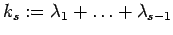,
,
and
,
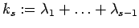,
,
and
We proceed by induction on  , the case 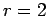 being clear.
The case can be handled immediately with the help of the
above recursion formula. If we calculate
, the case 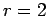 being clear.
The case can be handled immediately with the help of the
above recursion formula. If we calculate
But by the braid relations we get
yielding the right hand side factorization of . The other formula
is obtained similarly.

PROOF: By assumption,
lies in the kernel of
. Consequently the assertion concerning
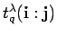 follows immediately from
Lemma 9.1 since
 .
Using the matrix transposition map
.
Using the matrix transposition map  introduced in
section 8, the formula for exchanged multi-indices follows
as well.
introduced in
section 8, the formula for exchanged multi-indices follows
as well.

Next, we investigate the transition from
 to its epimorphic image
to its epimorphic image
 .
For this purpose
denote by
the ideal
generated by
in the algebraic span
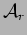 of the endomorphisms
.
For this purpose
denote by
the ideal
generated by
in the algebraic span
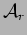 of the endomorphisms  and
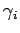. By equation (1) the realtion
holds in
. By the
braid relations
and
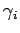. By equation (1) the realtion
holds in
. By the
braid relations
 the relations
and
must hold
in
for all
the relations
and
must hold
in
for all  as well.
The Iwahori-Hecke algebra
as well.
The Iwahori-Hecke algebra
 of type 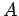 is defined
on generators for
by relations
of type 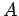 is defined
on generators for
by relations
Therefore, there is an epimorphism from to the quotient sending the generator to (notation as in [DD]).
PROOF: We have to show that
for all
 . Let
be such
that . From the defining equation of the quantum coefficient
of dilation
. Let
be such
that . From the defining equation of the quantum coefficient
of dilation  from section 4 we have
from section 4 we have
This means
in  for all
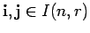. By (5) we have
and therefore,
for all
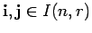. By (5) we have
and therefore,
where
,
and
 are the coefficient matrices of and .
are the coefficient matrices of and .

We extend the notation introduced in
(2). Let
be an endomorphism of
 . Set
. Set
Similar expressions are used with respect to the capital 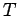 notation for bideterminants.
PROOF: Modulo
 we have
we have
since the corresponding equations (where is replaced by
)
hold in the Iwahori-Hecke algebra
.
Thus the assertion follows from Lemma 9.3.

Let
denote the ideal in the tensor algebra
 generated by the twofold invariant
tensor
and let
generated by the twofold invariant
tensor
and let
 be
its
be
its  -th homogeneous summand.
-th homogeneous summand.
PROOF: Since
and
for all
with
by section 4 it follows that  is contained in
. The verification of the opposite inclusion can be reduced to consider
elements of the form
with
for some
. But such an element can be
written as
for some
. Thus the assertion follows.
is contained in
. The verification of the opposite inclusion can be reduced to consider
elements of the form
with
for some
. But such an element can be
written as
for some
. Thus the assertion follows.

PROOF: First, note that the second equation follows from the first one by definition
of bideterminants.
By the above lemma we can reduce to the case
where
and
. Thus we get

Next, we give a quantum symplectic version of Laplace duality. The corresponding classical result can be found in [Ma, 2.5.1], for instance.
PROOF: Using the disjoint union
and the fact , which holds by length additivity we calculate
The next result is needed for the transition from
 -bideterminants of compositions
to -bideterminants of
partitions.
-bideterminants of compositions
to -bideterminants of
partitions.
PROOF: First, there is a permutation
, such that
is a partition. This
 is uniquely determined by
is uniquely determined by  (but
(but  only under the restriction to be of minimal length).
Clearly the parabolic subgroups
only under the restriction to be of minimal length).
Clearly the parabolic subgroups
 and
in
and
in
 are conjugate to each other. Thus, there
is an element
such that
are conjugate to each other. Thus, there
is an element
such that
 . Furthermore, it is known
from the theory of parabolic subgroups that in the left coset
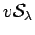 and in the right coset
there are unique representatives
. Furthermore, it is known
from the theory of parabolic subgroups that in the left coset
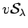 and in the right coset
there are unique representatives  (resp. )
of minimal length. Since we have
(resp. )
of minimal length. Since we have
 for all
and
for all
, we have
.
By the definition of bideterminants
(
),
the relations (5)
holding inside
for all
and
for all
, we have
.
By the definition of bideterminants
(
),
the relations (5)
holding inside
 and the calculus for the symbol given in
(3) we obtain
and the calculus for the symbol given in
(3) we obtain
Since 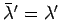 this results in
Next, we introduce a calculus for our bideterminants bringing
our special order on  into the picture. First,
some new notation has to be explained. The sum of two
multi-indices
into the picture. First,
some new notation has to be explained. The sum of two
multi-indices
 and
and
 is
defined by juxtaposition, that is
is
defined by juxtaposition, that is
Note that the map
 occurring in
Theorem 8.3
is additive in the sense
. This implies
occurring in
Theorem 8.3
is additive in the sense
. This implies
with respect to the lexicographic order  on
on
 .
To a multi-index
.
To a multi-index
 we consider the following
we consider the following  -spans
in
-spans
in
 :
:
Furthermore, we set

and denote the simple transpositions by , as before. The following lemma is the key concerning calculations with bideterminants. Again we set .
PROOF: The congruence relation for
follows from the one for
because
by (1).
Therefore, it is enough to prove the first assertion.
First, consider the case
. If
,
the asserted congruence relation is also an equation, as can be seen directly
from the definition of  . Turning to the case
, we split
. Turning to the case
, we split  into three summands
into three summands
To
 we set
and calculate
we set
and calculate
Since we obtain the equation
But
 and
and
for all by (11), yielding the asserted congruence modulo . If the interesting case is . Here the assertion immediately follows from the calculation
because
for all .

PROOF: Note that
is the
coefficient of
in the
expression
.
By definition of bideterminants and the conventions (10)
about , the result follows immediately from the lemma.

PROOF: We use induction on the length of  .
If this is zero there is nothing to prove.
If not, we write
where
and
.
By the induction hypothesis we have
.
If this is zero there is nothing to prove.
If not, we write
where
and
.
By the induction hypothesis we have
Here we have set
 ,
where the product runs over all pairs
such that
.
,
where the product runs over all pairs
such that
.
PROOF: We use induction on  , the case 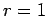 being trivial.
For
, the case 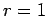 being trivial.
For  we embed
as the parabolic subgroup of
we embed
as the parabolic subgroup of
 generated by
, which fix
generated by
, which fix  .
If
.
If
 there is nothing to prove by the induction
hypothesis. Otherwise, we write
where
and
for an appropriate , thus
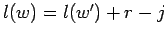. By the induction hypothesis, Lemma 9.9
and Remark 9.10 we calculate
there is nothing to prove by the induction
hypothesis. Otherwise, we write
where
and
for an appropriate , thus
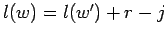. By the induction hypothesis, Lemma 9.9
and Remark 9.10 we calculate

PROOF: As for the proof of Corollary 9.11, this follows
easily from the preceding lemma, Lemma  and the definition of bideterminants.
and the definition of bideterminants.